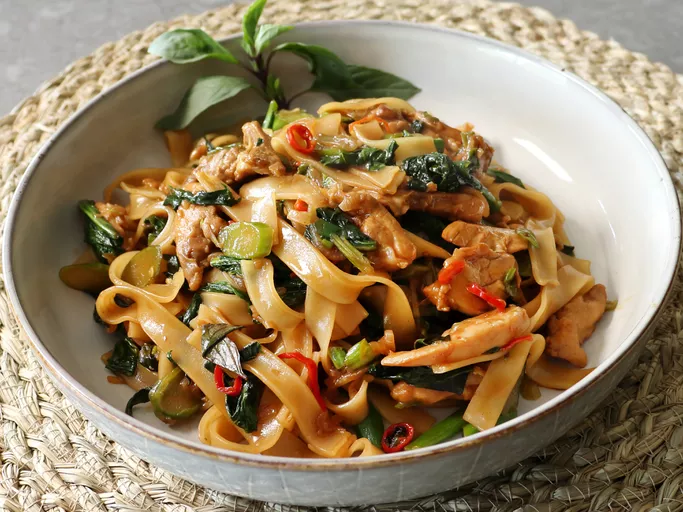

Chef John's Drunken Noodles

Description
Chef John did have a drink or three while making these drunken noodles, so he could enjoy them as the food gods intended, which is slightly drunk.
At least that's the main theory on how this "Pad Kee Mao" dish got its name. It is one of the easiest, and most delicious noodle recipe Chef John know.
Serve garnished with Thai Basil.
Ingredients (1 Serving)
- 8 ounces dried rice noodles
- 1/4 cup oyster sauce
- 1/4 cup soy sauce
- 1 tablespoon Asian fish sauce
- 1 tablespoon maple syrup
- 1 teaspoon white sugar
- 2 tablespoons cold water
- 2 tablespoons vegetable oil
- 1 teaspoon sesame oil
- 1 cup shallots, thinly sliced
- 6 teaspoons chile padi (bird's eye chiles),
- 4 clove garlic, minced
- 21/2 pounds skinless, boneless chicken thighs, cut into strips (optional)
- 1 pound Chinese broccoli, sliced (optional)
- 4 scallions, thinly sliced
- 1 cup fresh Thai basil leaves
Home